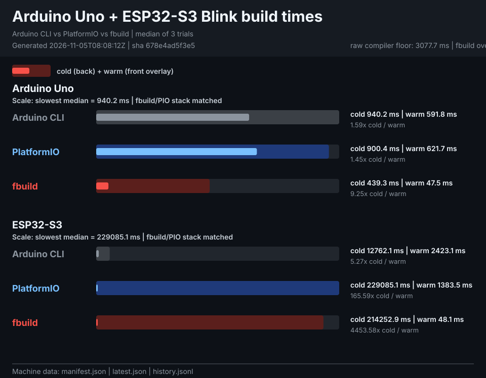

fbuild Blink build benchmark
All three tools compile the same Arduino Uno and ESP32-S3 bench/blink/blink.ino. Cold is a first-time install: each tool's project outputs, caches, packages and toolchains are removed before the timer, so every download lands inside the timed build (for Arduino CLI, that includes arduino-cli core install). Warm is the immediate no-change rebuild. Cold and warm are charted separately, each scaled to its own slowest median, so sub-second warm times stay visible.
* Measured on a link limited to 10 Mbit/s (the benchmark runs in its own shaped network namespace); cold includes every package and toolchain download.
Resolved package stacks: Arduino Uno: matched; fbuild/PlatformIO ratio shown. ESP32-S3: matched; fbuild/PlatformIO ratio shown. Exact package versions and representative core compiler commands are in latest.json.

| Board | Tool | Cold median | Warm median | Cold download | Cold / warm | Version |
|---|---|---|---|---|---|---|
| Arduino Uno | Arduino CLI | 59.73 s | 0.41 s | 60.7 MB | 144.88x | arduino-cli Version: 1.5.0 Commit: dd407d42d Date: 2026-05-19T14:07:51Z |
| Arduino Uno | PlatformIO | 1.01 min | 0.61 s | 59.3 MB | 99.51x | PlatformIO Core, version 6.2.0 |
| Arduino Uno | fbuild | 54.76 s | 0.05 s | 65.3 MB | 1151.09x | fbuild 2.5.52+git.ededbdf14773 |
| ESP32-S3 | Arduino CLI | 26.75 min | 2.61 s | 1.90 GB | 616.02x | arduino-cli Version: 1.5.0 Commit: dd407d42d Date: 2026-05-19T14:07:51Z |
| ESP32-S3 | PlatformIO | 11.08 min | 3.51 s | 668.6 MB | 189.33x | PlatformIO Core, version 6.2.0 |
| ESP32-S3 | fbuild | 3.40 min | 0.05 s | 236.5 MB | 4254.90x | fbuild 2.5.52+git.ededbdf14773 |
Cold phase breakdown
| Board | Tool | Phase | Cold median |
|---|---|---|---|
| Arduino Uno | PlatformIO | compile | 0.31 s |
| Arduino Uno | PlatformIO | convert-size | 0.07 s |
| Arduino Uno | PlatformIO | link | 0.04 s |
| Arduino Uno | PlatformIO | pre-compile | 1.01 min |
| Arduino Uno | fbuild | board-load | 0.01 s |
| Arduino Uno | fbuild | build-dirs | 0.00 s |
| Arduino Uno | fbuild | build-info | 0.00 s |
| Arduino Uno | fbuild | compile-core | 0.35 s |
| Arduino Uno | fbuild | compile-db | 0.00 s |
| Arduino Uno | fbuild | compile-lib-deps | 0.00 s |
| Arduino Uno | fbuild | compile-local-libs | 0.00 s |
| Arduino Uno | fbuild | compile-sketch | 0.16 s |
| Arduino Uno | fbuild | compile-variant | 0.00 s |
| Arduino Uno | fbuild | config-parse | 0.00 s |
| Arduino Uno | fbuild | core-cache-hydrate | 0.00 s |
| Arduino Uno | fbuild | core-cache-store | 0.00 s |
| Arduino Uno | fbuild | fast-path-check | 0.00 s |
| Arduino Uno | fbuild | flag-collect | 0.00 s |
| Arduino Uno | fbuild | fp-watches-collect | 0.00 s |
| Arduino Uno | fbuild | framework-ensure | 3.55 s |
| Arduino Uno | fbuild | link | 0.05 s |
| Arduino Uno | fbuild | link-convert | 0.01 s |
| Arduino Uno | fbuild | link-elf | 0.04 s |
| Arduino Uno | fbuild | link-size | 0.00 s |
| Arduino Uno | fbuild | project-as-lib | 0.00 s |
| Arduino Uno | fbuild | source-scan | 0.00 s |
| Arduino Uno | fbuild | toolchain-ensure | 45.21 s |
| ESP32-S3 | fbuild | archive-core | 0.02 s |
| ESP32-S3 | fbuild | board-load | 0.01 s |
| ESP32-S3 | fbuild | boot-artifacts | 0.23 s |
| ESP32-S3 | fbuild | build-dirs | 0.00 s |
| ESP32-S3 | fbuild | compile-core | 7.60 s |
| ESP32-S3 | fbuild | compile-core-variant | 7.60 s |
| ESP32-S3 | fbuild | compile-db | 0.00 s |
| ESP32-S3 | fbuild | compile-local-libs | 0.00 s |
| ESP32-S3 | fbuild | compile-sketch | 1.01 s |
| ESP32-S3 | fbuild | config-parse | 0.00 s |
| ESP32-S3 | fbuild | core-cache-hydrate | 0.00 s |
| ESP32-S3 | fbuild | core-cache-store | 0.01 s |
| ESP32-S3 | fbuild | disk-preflight | 0.02 s |
| ESP32-S3 | fbuild | fast-path-check | 0.00 s |
| ESP32-S3 | fbuild | fingerprint-save | 0.00 s |
| ESP32-S3 | fbuild | flag-collect | 0.00 s |
| ESP32-S3 | fbuild | fp-watches-collect | 0.00 s |
| ESP32-S3 | fbuild | fw-libs | 0.04 s |
| ESP32-S3 | fbuild | lib-deps | 0.00 s |
| ESP32-S3 | fbuild | link-convert | 0.14 s |
| ESP32-S3 | fbuild | link-convert-size | 1.04 s |
| ESP32-S3 | fbuild | link-elf | 0.89 s |
| ESP32-S3 | fbuild | link-size | 0.01 s |
| ESP32-S3 | fbuild | pioarduino-resolve | 3.19 min |
| ESP32-S3 | fbuild | project-lib | 0.00 s |
| ESP32-S3 | fbuild | scan-sources | 0.00 s |
Machine-readable data
- manifest.json — stable discovery index for agents
- latest.json — metadata, raw trials, and medians
- history.jsonl — rolling 365-run history